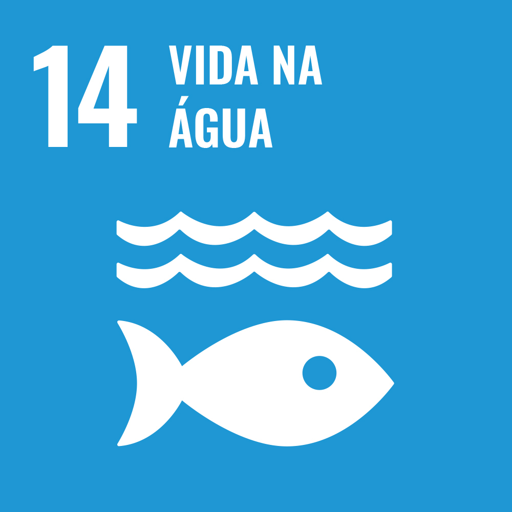

Imagens


O ODS 14 tem como finalidade conservar e promover o uso sustentável dos oceanos, dos mares e dos recursos marinhos para o desenvolvimento sustentável. Inegavelmente, os oceanos facilitam a sociedade através da provisão de alimentos, energia, transporte, turismo, etc. Além disso, regulam muitos os ecossistemas mais críticos da Terra. Podemos dizer que, os oceanos representam aproximadamente US$3 trilhões da economia mundial por ano ou 5% do PIB global. Entretanto, quase 50% dos oceanos estão sendo afetados por atividades realizadas pelo homem. Sobretudo, a poluição e pesca predatória, que causa a perda de habitat e o surgimento de espécies invasoras. Ao mesmo tempo que, o lixo também ajuda na degradação dos oceanos. Foram constatados mais de 13.000 pedaços de lixo plástico em cada quilômetro quadrado. Com o propósito de enfrentar todos esses desafios, o ODS 14 foi baseado.